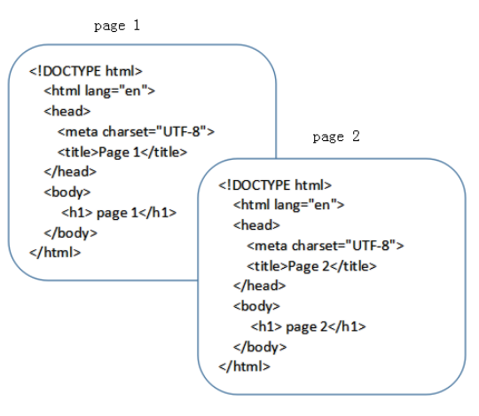
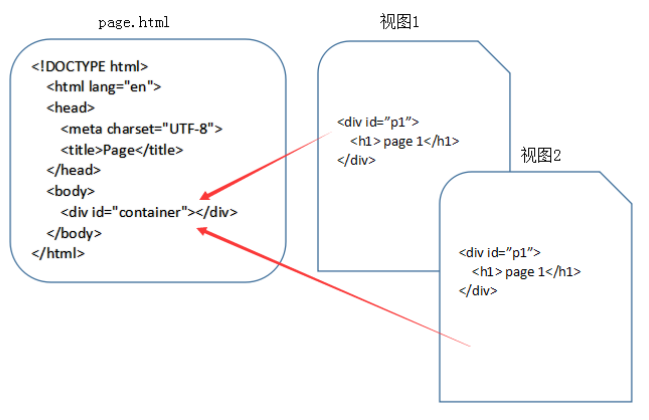

什么是SPA§
SPA 是 single page web application 的简称，译为单页Web应用。 简单的说 SPA 就是一个WEB项目只有一个 HTML 页面，一旦页面加载完成，SPA 不会因为用户的操作而进行页面的重新加载或跳转。 取而代之的是利用 JS 动态的变换 HTML 的内容，从而来模拟多个视图间跳转。
从传统页面到视图§
在传统的网站设计中，每个HTML文件都是一个完成的HTML页面，涵盖了完整的HTML结构。

在 SPA 的应用设计中，一个应用只有一个HTML文件，在HTML文件中包含一个占位符（即图中的 container），占位符对应的内容由每个视图来决定，对于 SPA 来说，页面的切换就是视图之间的切换。

前端路由的由来§
最开始的网页是多页面的，直到 Ajax 的出现，才慢慢有了 SPA。
SPA 的出现大大提高了 WEB 应用的交互体验。在与用户的交互过程中，不再需要重新刷新页面，获取数据也是通过 Ajax 异步获取，页面显示变的更加流畅。
但由于 SPA 中用户的交互是通过 JS 改变 HTML 内容来实现的，页面本身的 url 并没有变化，这导致了两个问题：
- SPA 无法记住用户的操作记录，无论是刷新、前进还是后退，都无法展示用户真实的期望内容。
- SPA 中虽然由于业务的不同会有多种页面展示形式，但只有一个 url，对 SEO 不友好，不方便搜索引擎进行收录。
前端路由就是为了解决上述问题而出现的。
什么是前端路由§
简单的说，就是在保证只有一个 HTML 页面，且与用户交互时不刷新和跳转页面的同时，为 SPA 中的每个视图展示形式匹配一个特殊的 url。在刷新、前进、后退和SEO时均通过这个特殊的 url 来实现。
为实现这一目标，我们需要做到以下二点：
- 改变 url 且不让浏览器向服务器发送请求。
- 可以监听到 url 的变化
作者：云中桥 链接：https://juejin.cn/post/6844903890278694919 来源：掘金 著作权归作者所有。商业转载请联系作者获得授权，非商业转载请注明出处。